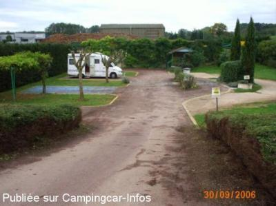

ASN = Aire de services avec stationnement nuit possible de :
BRANTÔME
(N° 331)
Accès/adresse :
Route de Nontron
Près des ateliers Font Vendôme
24310 BRANTÔME
Près des ateliers Font Vendôme
24310 BRANTÔME
Latitude : (Nord) 45.37871° Décimaux ou 45° 22′ 43′′
Longitude : (Est) 0.6458° Décimaux ou 0° 38′ 44′′
Tarif : 2014
Stationnement : 3,50 €
Eau : 2 €
Électricité : 1 €
Type de borne : EURO-RELAIS
Services :


Bloc sanitaire.
Vente d'accessoires aux Établissements Font Vendôme
Autres informations :
15 emplacements individuels
Tel : +33(0)553 057 021
http://www.ville-brantome.fr/index2b.php

Le 03/10/2006 par janicole
de
Andre
le 05/08/2013 :
Aire toujours agréable à15mn à pieds du centre de Brantome idéale pour deux ou trois jours Une remise à niveau des installations sanitaires serait bien utile.
Merci à FONT-VENDOME pour la confiance et la discrétion.
Aire toujours agréable à15mn à pieds du centre de Brantome idéale pour deux ou trois jours Une remise à niveau des installations sanitaires serait bien utile.
Merci à FONT-VENDOME pour la confiance et la discrétion.
de
Patpm27
le 17/06/2012 :
Bonjour à tous
Aire où tout se joue sur la confiance.
Avons passé 2 nuits sur cette aire au mois de Mai, coin tranquile et coùt modique
Merci à Font Vendome
Bonjour à tous
Aire où tout se joue sur la confiance.
Avons passé 2 nuits sur cette aire au mois de Mai, coin tranquile et coùt modique
Merci à Font Vendome
de
Rickette
le 03/01/2011 :
Bonjour à tous
Merci à Font Vendôme pour cette petite aire bien sympathique et à la confiance accordée pour le réglement
Bonjour à tous
Merci à Font Vendôme pour cette petite aire bien sympathique et à la confiance accordée pour le réglement
de
loulou38
le 13/10/2010 :
Merci à Font Vendome pour cette aire au stationnement fort agréable et ombragée ainsi que pour votre confiance. Personne ne passe pour encaisser, il faut juste laisser une enveloppe à l'accueil. Toilettes propres.
Merci à Font Vendome pour cette aire au stationnement fort agréable et ombragée ainsi que pour votre confiance. Personne ne passe pour encaisser, il faut juste laisser une enveloppe à l'accueil. Toilettes propres.
de
domipierre
le 23/03/2010 :
Aire bien sympa chez Font Vendome. Personne pour encaisser, c'était le week-end de la tempête et nous étions bien abrités par la haie.
Aire bien sympa chez Font Vendome. Personne pour encaisser, c'était le week-end de la tempête et nous étions bien abrités par la haie.
de
Maurice CAYE 50000
le 13/06/2009 :
Il y a une nouvelle aire de stationnement en cours d'aménagement, chemin du Vert Galant, près du jardin des Moines. L'aire de services du magasin SHOPY est hors service en ce qui concerne les vidanges. L'aire de FONT VENDOME est certes un peu petite mais toujours là pour faire plein et vidanges, tout cela pour 2€. Merci FONT VENDOME. Nous y sommes passés il y a moins de 10 jours. §
Il y a une nouvelle aire de stationnement en cours d'aménagement, chemin du Vert Galant, près du jardin des Moines. L'aire de services du magasin SHOPY est hors service en ce qui concerne les vidanges. L'aire de FONT VENDOME est certes un peu petite mais toujours là pour faire plein et vidanges, tout cela pour 2€. Merci FONT VENDOME. Nous y sommes passés il y a moins de 10 jours. §
de
philippe et martine du 77
le 23/12/2008 :
Même commentaire que titi 33. Merci Font Vendome. C'est effectivement très agréable de pouvoir stationner sur des aires de cette qualité.
Même commentaire que titi 33. Merci Font Vendome. C'est effectivement très agréable de pouvoir stationner sur des aires de cette qualité.
de
NIKKI
le 01/12/2007 :
Brentôme! Difficiles sont ceux qui n'aiment pas. La Venise verte du Périgord. L'aire située près des établissements Font Vendôme est agréable. Il y a un grand terrain en centre ville qui accueille les camping-cars simplement en parking mais gratuitement et le magasin Shoppi aussi. Ce n'est pas le cas pour toutes les communes où nous sommes allés. La dernière visite remonte à septembre et nous sommes toujours aussi satisfaits.
Brentôme! Difficiles sont ceux qui n'aiment pas. La Venise verte du Périgord. L'aire située près des établissements Font Vendôme est agréable. Il y a un grand terrain en centre ville qui accueille les camping-cars simplement en parking mais gratuitement et le magasin Shoppi aussi. Ce n'est pas le cas pour toutes les communes où nous sommes allés. La dernière visite remonte à septembre et nous sommes toujours aussi satisfaits.
de
gilbert
le 14/08/2007 :
Les tarifs ont bien changé : 2€ pour l'eau; 2€ la nuit; 1€ l'électricité; + WC à côté. Pour cet été, la ville a aménagé un champ à proximité du centre ville ( sans commodités).
4 CC seulement. La présence de la déchèterie à côté n'est malheureusement pas un atout ..
Les tarifs ont bien changé : 2€ pour l'eau; 2€ la nuit; 1€ l'électricité; + WC à côté. Pour cet été, la ville a aménagé un champ à proximité du centre ville ( sans commodités).
4 CC seulement. La présence de la déchèterie à côté n'est malheureusement pas un atout ..
de
guy40
le 30/03/2007 :
Le stationnement sur cette aire va perdre son charme. Trigano qui a racheté Font Vendôme et réalise de gros aménagements en batiments et parkings d'exposition ou de stockage. La petite prairie herbeuse n'existe plus...
Le stationnement sur cette aire va perdre son charme. Trigano qui a racheté Font Vendôme et réalise de gros aménagements en batiments et parkings d'exposition ou de stockage. La petite prairie herbeuse n'existe plus...
de
pbl
le 28/12/2006 :
Seule petite difficulté : pas toujours facile de manœuvrer autour de la borne. Sinon, très calme et largement suffisant.
Seule petite difficulté : pas toujours facile de manœuvrer autour de la borne. Sinon, très calme et largement suffisant.
de
Mike & Jackie B
le 05/09/2005 :
Stayed here Aug.2005 lovely spot about 1k from town. Lots of campers parked in town and just used borne which has easy access. Honesty box for money and no problem if hard standings (4) are full you can park on grass at side. Bit noisey early morning with bottle bank in next field! Well worth a visit for 5 euros
Stayed here Aug.2005 lovely spot about 1k from town. Lots of campers parked in town and just used borne which has easy access. Honesty box for money and no problem if hard standings (4) are full you can park on grass at side. Bit noisey early morning with bottle bank in next field! Well worth a visit for 5 euros